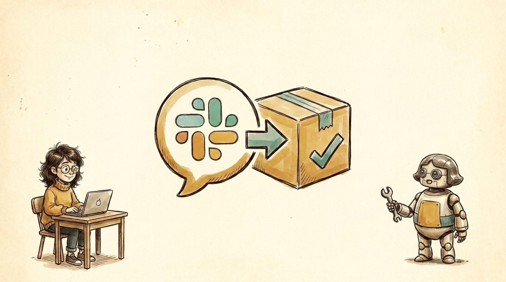

<section id="r01" data-transition="fade" style="background:#F5EEE0;color:#222222;font-family:Arial, Helvetica, sans-serif;padding:0;display:flex;flex-direction:column">

<aside>Recap of the June talk, From Slack to Shipped: turning intent into behavior-verified code. Meet Maya (a maker) and Robo-Maya, her AI counterpart.</aside>
</section>
